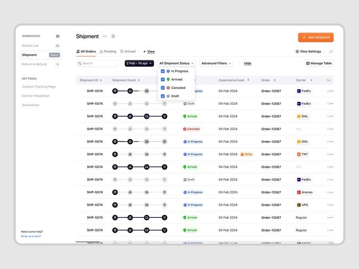
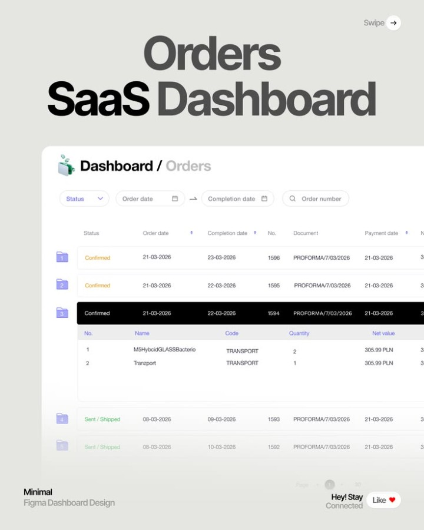
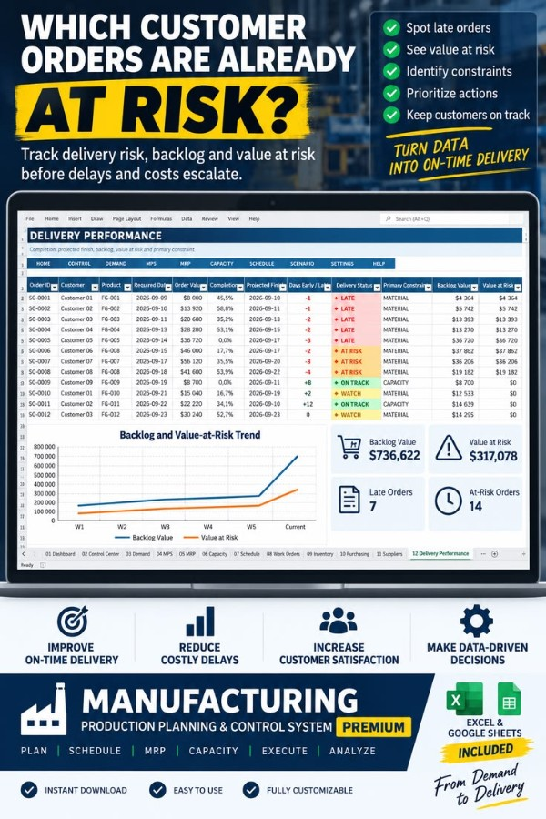
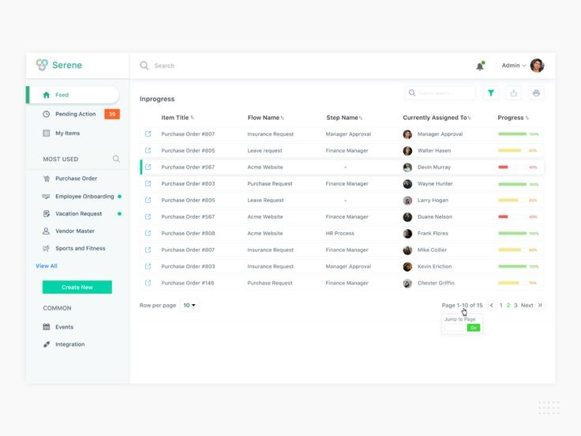
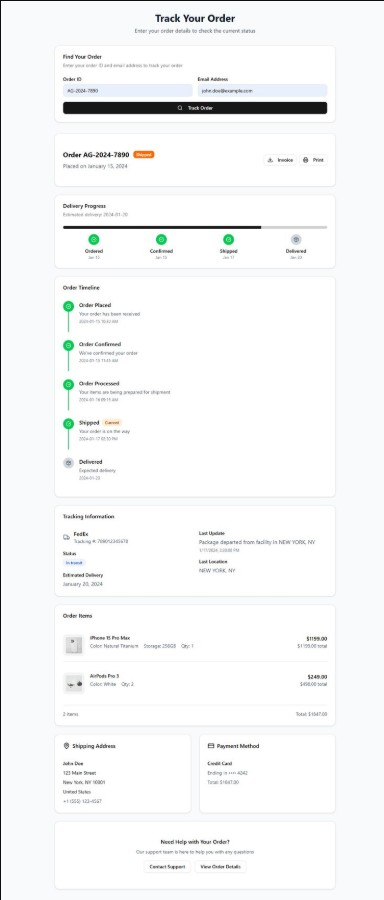

Đã chọn A, 11/10 Ngăn chi tiết đã làm lại theo góp ý: thấy routing và trạng thái từng bước, bỏ mốc thời gian (mục ngay dưới phương án A). B và C giữ lại để đối chiếu. Chưa đụng code app. Màn này chỉ để THEO DÕI: kinh doanh và chủ xưởng mở ra là biết đơn của mình đang ở đâu, có kịp hạn không, đang vướng gì. Không có nút ghi nào. Ba phương án A, B, C bên dưới cùng một bộ dữ liệu, mỗi phương án bám một mẫu tham khảo.
Đếm trên màn thật hôm nay: hồ sơ một lệnh có khoảng 60 ô thông tin (7 cột công đoạn, 16 ô quy cách, bảng vật tư, 7 loại nhật ký…). Người kinh doanh cần chưa tới 10 ô trong số đó.
| Thông tin đang có | Ở màn mới | Vì sao |
|---|---|---|
| Mã đơn, khách, mặt hàng, số lượng, hạn giao | Giữ | Đây là thứ kinh doanh dùng để nhận ra đơn của mình. Mã đơn đứng đầu dòng thay cho mã lệnh. |
| Routing: tên bước, tổ làm, thuê ngoài và nhà gia công, trạng thái từng bước | Giữ, trong ngăn chi tiết | Kinh doanh cần biết hàng qua bước nào, ai đang cầm, có gửi ra ngoài không (góp ý 11/10). |
| Chặng hiện tại của từng mặt hàng | Giữ, gọn lại | Chỉ còn bốn chặng. Trong chặng Sản xuất ghi thêm tên bước đang làm ("đang Cán màng, bước 3 trên 6") vì khách hay hỏi đúng câu đó. |
| Dự kiến xong, hạn giao | Giữ, thêm số ngày sớm hay trễ | "Trễ 2 ngày" đọc nhanh hơn hai ngày tháng đặt cạnh nhau. |
| Cờ bất thường (trễ, sự cố, tạm dừng, KCS không đạt, thiếu vật tư) | Giữ, gộp thành một câu "Đang vướng" | Kinh doanh cần biết có chuyện và chuyện gì, không cần biết máy số mấy. |
| Đã nhập kho, đã giao | Giữ | Trả lời câu "có hàng chưa, giao được chưa". |
| Mã lệnh, phiên bản, nhóm lệnh | Vào ngăn chi tiết | Chỉ cần khi gọi điện hỏi xưởng. |
| Máy, người đứng máy, giờ kế hoạch và thực tế từng bước, tốt/hỏng từng bước | Bỏ | Việc của điều độ và tổ trưởng, đã có ở Xếp lịch và Hồ sơ lệnh. |
| Vào → ra (425 tờ nguyên → 850 tờ in…), quy cách 16 ô, số kẽm, mảnh xả | Bỏ | Thông số kỹ thuật, kinh doanh đã thấy lúc tính giá. |
| Vật tư từng bước, kho đã cấp | Bỏ, chỉ còn khi thiếu | Thiếu vật tư thì hiện trong "Đang vướng" (vd "Thiếu màng BOPP, hàng về 13/10"). Đủ thì im. |
| Nhật ký 7 loại (giao người vào bước, bắt đầu/kết thúc chạy…) | Bỏ hẳn | Nhật ký LSX26-0003 có 24 dòng "giao người vào bước". Trạng thái từng bước trong routing đã đủ trả lời "tới đâu rồi". |
| Góc nhìn Theo máy, 33 máy đang trống | Bỏ khỏi màn này | Đây là câu hỏi của điều độ. Màn Xếp lịch đã trả lời theo máy. |
| In phiếu công nghệ | Bỏ | Phiếu cho tổ sản xuất, vẫn in ở Hồ sơ lệnh. |
Đã tìm "order tracking dashboard ui table", "production tracking dashboard manufacturing order progress", "order progress tracker table stepper saas ui". Bỏ phần lớn: bảng đơn bán lẻ chung chung, và mẫu bán template Excel với ô KPI số to (màn SVN đã bác kiểu này). Pinterest đòi đăng nhập nên tôi chỉ xem ảnh pin, không đăng nhập.





Đặc như bảng tính, mỗi đơn một dòng cao 40px. Cột Chặng là bốn chấm: tô đậm là đã qua, chấm xanh là đang ở, chấm đỏ là đang kẹt. Ngay sau là một dòng chữ nói đang làm gì. Đơn nhiều mặt hàng bấm mũi tên bung từng mặt hàng (thử DH007, DH002). Bản 3 đã bỏ dòng bung này, xem mục "Đơn 20 mặt hàng". Hợp nhất khi người xem có nhiều đơn và muốn liếc cả trang.
| Đơn | Khách hàng | Mặt hàng | Số lượng | LệnhSXKhoGiao |
Đang làm | Hạn giao | Đang vướng |
|---|---|---|---|---|---|---|---|
| ▶DH007* | VINAMILK | Hộp sữa 180ml +1 món | 10.500 cái | In, bước 2 trên 5 | trễ 2 ngày | Máy in 4 màu đang sửa | |
| Hộp sữa 180ml LSX26-0011 | 10.000 cái | In, bước 2 trên 5 | dự kiến 17/10 | Máy in 4 màu đang sửa | |||
| Thùng carton 5 lớp LSX26-0012 | 500 cái | Đã nhập kho 500 | xong 9/10 | — | |||
| DH009* | TRUNG NGUYÊN | Túi giấy kraft | 3.000 cái | Chưa có lệnh | còn 3 ngày | Chưa xếp lịch sản xuất | |
| DH010* | BIBICA | Hộp bánh Tết | 8.000 cái | Cán màng, bước 3 trên 6 | 25/10 | Thiếu màng BOPP, về 13/10 | |
| DH012* | SABECO | Nhãn chai 450ml | 50.000 cái | Tạm dừng ở In | 22/10 | Chờ khách duyệt lại màu | |
| DH011* | KINH ĐÔ | Catalogue 24 trang | 2.000 cuốn | Đã giao 1.200 trên 2.000 | mai 12/10 | — | |
| ▶DH002 | BIBICA | Sách A5 64 trang | 1.000 cuốn | Nhập kho 240 trên 1.000 | 6/11 | Bìa: lô KCS không đạt | |
| Ruột sách A5 64 trang LSX26-0003 | 1.000 cuốn | Xong sản xuất | xong 11/10 | — | |||
| Bìa sách A5 LSX26-0004 | 1.000 cuốn | Xong sản xuất | xong 11/10 | KCS không đạt | |||
| DH003 | CAFÉ KATINAT | Tờ rơi A4 4/4 | 3.000 tờ | Gia công ngoài trọn gói | 27/10 | Chưa ước được ngày | |
| DH008* | DƯỢC HẬU GIANG | Hộp thuốc 10 vỉ | 20.000 cái | Bế, bước 4 trên 6 | 20/10 | — | |
| DH004 | CAFÉ KATINAT | Tờ rơi A4 4/4 | 4.000 tờ | Đủ hàng, chờ xếp xe | 27/10 | — | |
Dấu * sau mã đơn là đơn giả định để đủ ca (DB dev chỉ có 4 đơn đã xuống xưởng). Đơn sắp theo mức cần để ý trước, rồi tới hạn giao gần nhất. Chip "Đang làm" là mặc định; đơn giao xong rụng khỏi danh sách sau 3 ngày như luật hiện nay. Nút "Kinh doanh" chỉ hiện với người thấy đơn của nhiều người (chủ xưởng, trưởng phòng).
Ngăn mở từ bên phải, kéo rộng được như mọi ngăn khác. Chỉ một trang, không chia tab, không có mốc thời gian. Đầu ngăn trả lời: hạn giao, bao giờ xong, đang vướng gì. Thân ngăn là ROUTING của từng mặt hàng, đúng kiểu danh sách dọc ở bàn tổ sản xuất: mỗi bước một dòng, có tổ làm (hoặc thuê ngoài và tên nhà gia công) và trạng thái ghi bằng chữ ở bên phải. Cuối routing nối thêm hai dòng Nhập kho và Giao khách, vì kinh doanh cần biết hàng đi tới đâu sau xưởng.
Bản 2 xếp mỗi mặt hàng thành một khối routing dọc nối tiếp nhau. Với 20 mặt hàng, ngăn dài khoảng 20 màn cuộn và không trả lời được câu đầu tiên: món nào đang có chuyện. Dòng bung trong bảng A cũng đẩy 20 dòng con chen giữa danh sách đơn. Bản 3 đổi thành một luật chung cho mọi đơn, dù 1 hay 20 mặt hàng:
Dòng của đơn này trong bảng danh sách A
| Đơn | Khách hàng | Mặt hàng | Số lượng | LệnhSXKhoGiao | Đang làm | Hạn giao | Đang vướng |
|---|---|---|---|---|---|---|---|
| DH013* | TƯỜNG AN | Nhãn Tường An 1L và 19 món | 20 mặt hàng | 12 trên 20 đã nhập kho | còn 5 ngày | 2 món thiếu màng BOPP |
Chấm chặng đỏ ở Lệnh vì còn 2 món chưa có lệnh: đơn đi theo món chậm nhất. Nhờ vậy đơn 20 món không bao giờ trông "xong rồi" khi còn món chưa làm.
Ngăn chi tiết của đơn này
| Mặt hàng | Số lượng | Các bước | Đang ở | Nhập kho | Đã giao | Đang vướng |
|---|
Đúng khổ màn 1440: thanh bên 236px, danh sách mờ phía sau, ngăn 1000px phủ bên phải, kéo mép trái để đổi độ rộng. Ngăn mở bằng bảng mặt hàng, món vướng nằm đầu và đã bung sẵn routing. Bấm ra ngoài ngăn hoặc nút ✕ là đóng, danh sách giữ nguyên bộ lọc và chỗ cuộn.
Câu hỏi đầu tiên là "đơn nào sắp trễ", nên đơn chia nhóm theo mức kịp hạn: Trễ, Có nguy cơ, Kịp, Chưa ước được. Mỗi dòng có thanh % xong, dự kiến xong đặt cạnh hạn giao, và số ngày sớm hay trễ. Cột Đang vướng có nhãn loại (Máy, Vật tư, Khách, Chưa lệnh, KCS) để chủ xưởng liếc là biết vướng ở khâu nào. Hợp nhất khi màn dùng để họp giao ban hoặc trả lời khách gọi hỏi hạn.
| Đơn | Khách hàng | Mặt hàng | Số lượng | Đã xong | Hạn giao | Dự kiến xong | Sớm, trễ | Đang vướng |
|---|---|---|---|---|---|---|---|---|
| Trễ hạn 1 đơn | ||||||||
| ▶DH007* | VINAMILK | Hộp sữa 180ml +1 món | 10.500 cái | 15/10 | 17/10 | trễ 2 ngày | MáyMáy in 4 màu đang sửa | |
| Hộp sữa 180ml đang In, bước 2 trên 5 | 10.000 cái | 17/10 | trễ 2 ngày | Máy in 4 màu đang sửa | ||||
| Thùng carton 5 lớp đã nhập kho 500 | 500 cái | 9/10 | xong | — | ||||
| Có nguy cơ 4 đơn | ||||||||
| DH011* | KINH ĐÔ | Catalogue 24 trang | 2.000 cuốn | 12/10 | xong | hạn mai | GiaoCòn 800 cuốn chưa giao | |
| DH009* | TRUNG NGUYÊN | Túi giấy kraft | 3.000 cái | 14/10 | — | còn 3 ngày | LệnhChưa lên lệnh | |
| DH010* | BIBICA | Hộp bánh Tết | 8.000 cái | 25/10 | 24/10 | sớm 1 ngày | Vật tưThiếu màng BOPP, về 13/10 | |
| DH012* | SABECO | Nhãn chai 450ml | 50.000 cái | 22/10 | — | tạm dừng | KháchChờ khách duyệt lại màu | |
| Kịp hạn 3 đơn | ||||||||
| DH008* | DƯỢC HẬU GIANG | Hộp thuốc 10 vỉ | 20.000 cái | 20/10 | 16/10 | sớm 4 ngày | — | |
| DH004 | CAFÉ KATINAT | Tờ rơi A4 4/4 | 4.000 tờ | 27/10 | xong 7/10 | đủ hàng | Chờ xếp xe giao | |
| ▶DH002 | BIBICA | Sách A5 64 trang | 1.000 cuốn | 6/11 | xong 11/10 | thiếu 760 | KCSBìa: lô không đạt | |
| Ruột sách A5 64 trang LSX26-0003, nhập kho 240 | 1.000 cuốn | xong 11/10 | — | |||||
| Bìa sách A5 LSX26-0004 | 1.000 cuốn | xong 11/10 | KCS không đạt | |||||
| Chưa ước được 1 đơn | ||||||||
| DH003 | CAFÉ KATINAT | Tờ rơi A4 4/4 | 3.000 tờ | 27/10 | — | còn 16 ngày | Gia côngChưa hẹn ngày trả | |
DH002 xếp vào "Kịp" vì hạn còn 26 ngày, nhưng thanh chỉ 24% vì kho mới nhận 240 trên 1.000 cuốn. Đây là số thật trên DB dev (lệnh đã đóng với 250 cuốn). Màn mới nói thẳng "thiếu 760" thay vì để "Sẵn sàng giao" như bây giờ.
Không có bảng rộng. Bên trái là danh sách đơn gọn, mỗi đơn hai dòng chữ cùng một thanh bốn đoạn mảnh. Bấm đơn nào thì nửa phải hiện ngay trang "theo dõi đơn" (thanh chặng lớn, từng mặt hàng, mốc), không cần mở ngăn. Hợp nhất khi mỗi người chỉ có vài đơn và xem kỹ từng đơn, kiểu theo dõi vận đơn. Đổi lại: không so được nhiều đơn cùng lúc như A và B.
Từng mặt hàng
| Mặt hàng | Đang ở | Nhập kho | Đang vướng |
|---|---|---|---|
| Ruột sách A5 64 trang | Xong sản xuất 11/10 | 240 trên 1.000 | — |
| Bìa sách A5 | Xong sản xuất 11/10 | gộp với ruột | KCS không đạt ở Cán màng |
Mốc thời gian